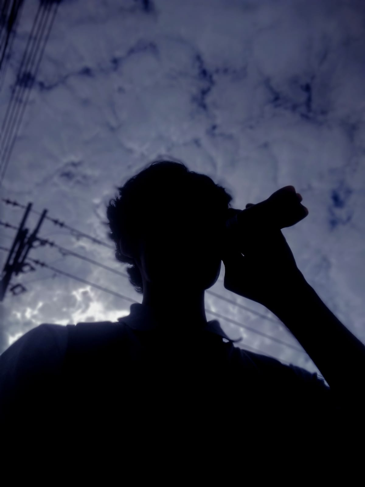

Nasci em Nova Iguaçu, no Rio de Janeiro. Desde muito cedo — ainda um "mini Arthur" — já demonstrava um interesse fora do comum por tecnologia.
Tive acesso à internet logo novo, e isso não foi um problema — foi exatamente o que impulsionou tudo que eu viria a me tornar no aspecto tecnológico.
Cresci assistindo canais sobre tecnologia, imaginando como seria mexer naqueles dispositivos na prática. Com 7 ou 8 anos, já passava horas vendo vídeos longos de unboxing e explorando conteúdos que iam muito além do básico.
Foi nessa fase que comecei a ouvir termos como "hacking" e "técnico de informática" — e, mesmo sem entender completamente, já sentia que queria chegar perto daquele mundo no futuro.
Aos 12, ganhei meu primeiro computador — um usado que mal rodava Linux. Passei noites em fóruns, aprendendo a programar por necessidade. Descobri que podia contar histórias com números e visualizações. Foi quando unei o amor por narrativas à precisão da tecnologia.
E assim fui crescendo, aprimorando cada vez mais meus conhecimentos, criando um sonho de ser programador e também atuar na Força Aérea Brasileira (FAB).
Com muita leitura em fóruns, sites, repositórios no GitHub, vídeos e aulas, fui evoluindo aos poucos — não só na programação, mas no entendimento da informática como um todo.
Foi um processo contínuo: aprender, testar, errar e voltar melhor. Fiz cursos de Python, explorei diferentes áreas e fui aprofundando até entender não só como programar, mas como as coisas realmente funcionam por trás.
Com o tempo, comecei a estudar desde o básico — entendendo a lógica dos sistemas até chegar no funcionamento mais fundamental de um computador, incluindo circuitos e arquitetura.